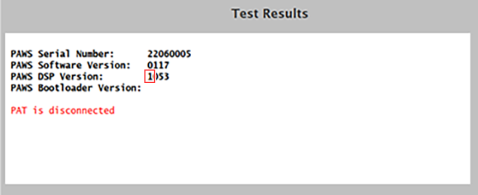
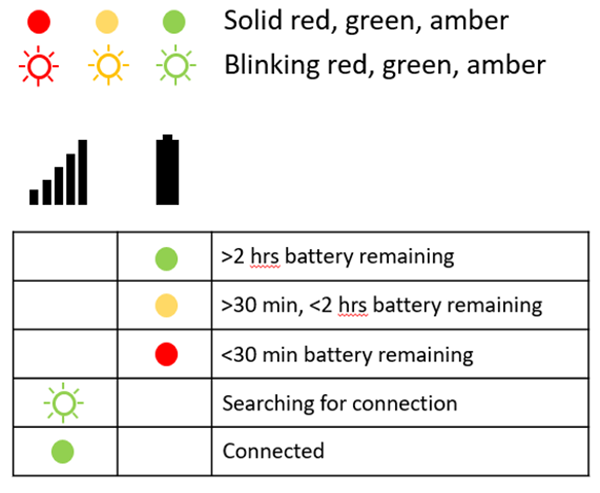
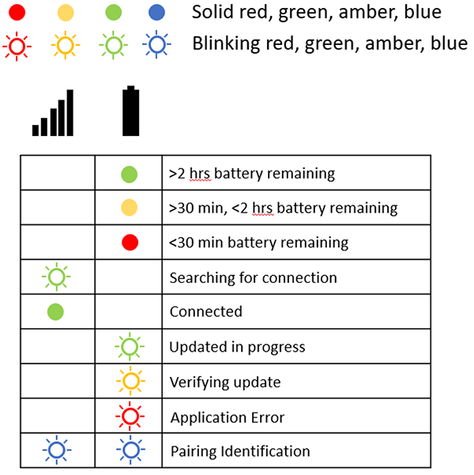
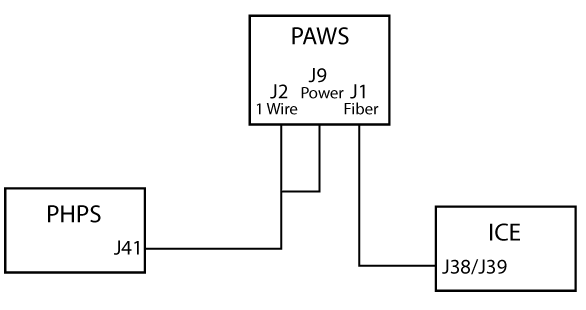

- 00000018WIA308CADB0GYZ
- id_20682151.9
- Jul 10, 2025 3:51:38 PM
Troubleshooting the wireless gating system
Troubleshoot the wireless gating system.
Overview
The wireless gating system uses Radio Frequency (RF) signals to communicate patient physiological information to the MR scanner for respiratory or cardiac gating. This topic describes troubleshooting procedures for the wireless gating system.
Components
The wireless gating system consists of the Physiological Acquisition Wireless Station (PAWS), which is mounted to the magnet Side Electronics Plate (SEP), and the Physiological Acquisition Transceivers (PAT)s, which are kept on the charging station in the operator workspace. Two cables can connect to the PAT to acquire physiological data from the patient: an electrocardiogram (ECG) cable with four clamps for electrode patches, and a PhotoPlethysmoGraphy (PPG) finger band. A respiratory sensor (pillow) connects to the PAT through an air hose and is strapped to the patient to monitor respiratory data.
Theory of operations
Two PATs are included with the system, but only one PAT will connect to the PAWS at one time. When the PAWS is not connected to a PAT, the PAWS will pair with any available PAT. If the PAWS detects multiple available PATs, it will pair to the PAT with the strongest signal. The PAWS and PAT remain paired until connection between them is broken.
Gen 1 and Gen 2
An improved Gen 2 wireless gating system was released in Q3 2025. The Gen 1 and Gen 2 PAWS and PAT are not compatible. A scanner with a Gen 2 PAWS will only pair with a Gen 2 PAT and vice versa. The Gen 2 PAWS requires software version 30.3_R01 or later, a Gen 2 PAWS with software prior to software version 30.3_R1 will cause a TPS reset failure. The PAWS and PAT Gen can be identified by the part numbers. To determine the PAWS Gen without removing the magnet enclosure cover, look at the PAWS DSP Version shown in the PAC Manual Tests. See Displaying Wireless PAC status. The first digit of the PAWS DSP Version indicates the generation of the PAWS.
| Part | Gen 1 | Gen 2 |
|---|---|---|
| PAWS | 5717528-3 (Gen 1) | 5717528-130 (Gen 2) |
| PAT | 5717528 (Gen 1) | 5717528-100 (Gen 2) |

PAT status indicator LEDs
The PAT has two LEDs to indicate the PAT’s status. The connectivity LED indicates the status and strength of the connection to the PAWS. The battery LED indicates the status of the PAT battery. On the Gen 2 PAT, the battery LED also indicates the status of PAT firmware update.


PAT firmware update
The Gen 2 hardware is capable of updating the PAT firmware. When the PAT and PAWS are paired, the PAWS makes sure the firmware version of the PAT matches the firmware version that the PAWS expects. If the firmware version is different, an error message is displayed on the In-Room Display (IRD) and the host PC. The firmware update takes approximately four minutes to complete. The user can select to do the update or to not allow the update. Gated scans are not possible with a firmware version mismatch. It is recommended that when one PAT firmware update is complete, any other PATs that will be used with the scanner should be paired and allowed to do the firmware update. If the PAT battery becomes depleted during update, the update will fail and the PAT may become corrupted.
Troubleshooting

PAT will not connect to PAWS – scans that require gating are disabled
This fault will be indicated by a flashing green connectivity light on the PAT and a hardware mismatch error may be displayed on the host PC based on host software version and wireless gating hardware generation.
- This fault may be caused by a mismatch of Gen 1 and Gen 2 hardware. Use the Display Wireless PAC Status test or visual inspection to determine the generation of PAWS installed in the system and retry with a correct generation PAT.
- If multiple PATs of the correct generation will not connect to PAWS, make sure there is power at the PAWS, measure the cable continuity between the Patient Handling Power Supply (PHPS) and PAWS, and replace the PHPS if there are no cable faults and no power at the PAWS. Replace the power cable if it is faulty and reseat the connector if there is power at the connector.
- If the PAWS has power but does not pair with a PAT, make sure the PAWS antenna is securely connected. Reseat the antenna if loose.
- If the antenna is securely connected and the PAWS does not pair, replace the PAWS.
Unable to scan gated scans – no gating data
- Do the PAC Manual Tests, make sure the PAWS cables do not have any loose connections or any faults (bent connector pins, open or shorted conductors, and so on). Reseat any loose connectors or replace any cable that is defective.
- Make sure there is power at the PAWS, measure cable continuity between the PHPS and PAWS. Replace the PHPS if there are no cable faults and no power at the PAWS. Replace the power cable if it is faulty. Reseat the connector if there is power at the connector.
- Use diagnostics to make sure there is fiber optic output at the ICE and replace the ICE if it is defective.
- Make sure the fiber optic cable connectors are fully seated and use diagnostics to make sure the fibers are not broken. Reseat any loose connections and replace any broken fibers (or use spare fibers if available).
- If all the cables are functional and the PAWS is communicating with the host but does not supply triggers for gated scans, make sure the PAWS antenna is securely connected to the PAWS. Tighten the connection if it is loose. Replace the PAWS if the antenna is secure and does not supply triggers.
Unable to scan gated scans – no status lights on PAT or battery low light
- The PAT battery is too low to scan, recharge the PAT using the charging cable.
- If the PAT will not charge, make sure the charging station has power, the charging connector pins are not bent or otherwise damaged, and the PAT is fully seated onto the connector. Replace the charging station if there are connector defects or power is present at the charging station but neither cradle will charge either PAT. Replace the PAT if another PAT will charge in the same cradle that the discharged PAT will not charge in.
PAT update failure
- If the PAT turns off during a firmware update and the update fails, the PAT may become corrupted. If the battery is low, charge the PAT and retry the update.
- If the update fails with a charged battery, try the update with another PAT. If the update of the second PAT succeeds, the PAT with the failed update may be corrupted and should be replaced. If the update fails on both PATs, the PAWS may need a TPS reset to reload PAWS software, or the PAWS may be defective.
PAT indicates a connection but the scanner does not show gating data
- Power off the PAT and power it back on inside the scan room with the door closed. If the PAT connects and the scanner displays gating data, advise the operator to always power on the PAT in the scan room with the door closed.
- If the PAT shows a connection but the scanner does not, do a TPS reset and connect again.
- If the PAT does not connect in the scan room with the door closed, see PAT will not connect to PAWS – scans that require gating are disabled.
Poor image quality
Poor image quality may be caused by the patient moving during automatic learning. The operator must be trained to make sure the patient does not move any part of their body when the learning in progress icon is displayed.
Unable to scan ECG scans
- Make sure the ECG cable is connected securely to the patient electrodes and the PAT.
- Do Checking the ECG leads to make sure the ECG cables are not defective (broken or shorted conductor). Replace the cable if it is defective.
- If the cable is not defective and the ECG data is noisy, turn off or relocate any devices in the scan room that may cause Radio Frequency (RF) interference.
- Attempt the scan with another PAT and replace the defective PAT if the scan succeeds.
Unable to scan PPG scans
- Make sure the PPG finger clip is securely connected to the patient’s finger and the PAT.
- Make sure the PPG cable is not defective (broken or shorted conductor, PPG sensor defect). Replace the cable if defective.
- Attempt the scan with another PAT and replace the defective PAT if the scan succeeds.
Unable to scan respiratory scans
- Inspect the pneumatic pillow and hose. Replace the pillow if there are any defects (leaks or pneumatic hose obstruction).
- Attempt the scan with another PAT and replace the defective PAT if the scan succeeds.
Image quality is degraded or gated scans fail due to bad triggering
This may be caused when learning happens inside the bore. For optimal triggering performance, learning should happen outside the bore. Learning may inadvertently occur inside the bore if the PAT is powered on outside the scan room, or with the scan room door open and the PAT connected to a nearby MR scanner. The PAT would then connect to the correct scanner when the scan room door is closed. If the patient is in the bore, the system would begin learning and triggering may be degraded. Advise the operator to always power on the PAT inside the scan room with the door closed and to make sure the scanner is displaying ECG data prior to moving the patient inside the bore.